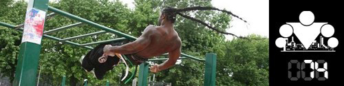
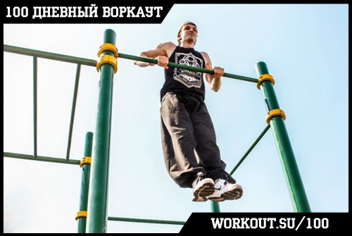

100 Дневный воркаут
<==== Вернуться к оглавлению
День 74. Как научиться делать выход силой на турнике?

Вчера я рассказал вам об
отжиманиях на брусьях
и понял, что есть ещё одно упражнение, о котором я просто обязан вам сообщить, раз уж вы встали на путь воркаута!
Выход силой

Наверное выход силой это именно то, с чего начинается переход от простого ОФП в мир воркаута. Это упражнение не только отличное само по себе (потому что объединяет в себе и тягу, и жим, и тренировку сухожилий), но и является ключевым при составлении связок из различных элементов на турниках, брусьях или любых других конструкциях.
Если вы начинаете свой тренировочный путь со
100 дневного воркаута
, то пробовать выходы силой вам, скорее всего, ещё рано, и сегодняшний инфо-пост будет носить в большей степени информационный характер. Вообще, я бы рекомендовал начинать учить выходы, когда вы уже добьетесь приличных успехов в подтягиваниях (20 чистых), отжиманиях на брусьях (30-40 чистых) и отжиманиях от пола (60-70 чистых). Поверьте, это позволит вам избежать пустой траты времени и может защитить от травм локтевых суставов и связок.
Основные моменты
* Чем больше амплитуда движения, тем больше мышц, задействуется в процессе.
* Чтобы сделать выход силой, нужно закинуть запястья на уровень перекладины или выше неё.
* Поэтому старайтесь делать движение так, как если бы вы хотели опустить турник перед собой. То есть вы НЕ тянете себя к турнику или турник к себе, а стараетесь его опустить перед собой.
Техника безопасности
Поскольку при выполнении выходов силой активно участвуют кисти и запястья, плечевые и локтевые суставы, а так же лучезапястный сустав), то очень важно следовать правильной технике:
* Движение должно проводиться по естественной траектории
* Мышцы должны всё время находиться в напряжении (особенно важно на негативной фазе)
* При возникновении неприятных ощущений пробуйте другие варианты выполнения упражнения, меняйте хваты и т.д.
Само упражнение, если разбивать его на составляющие, будет выглядеть следующим образом:
1) Вис на турнике
2) Подъем тела вверх (фаза ТЯГИ) за счет резкого сокращения мышц
3) Перевод тела в положение над турником (фаза ПЕРЕВОДА)
4) Отжимание от турника (фаза ЖИМА)
5) Фиксация в верхней точке над турником
6) Сгибание рук и опускание тела к турнику
7) Перевод тела в положение под турником (фаза ПЕРЕВОДА)
8) Разгибание рук и возвращение в исходную позицию
Выполнять упражнение можно 2 способами:
- За счет взрывной силы можно сделать настолько высокое подтягивание, что кисти окажутся над турником и останется их просто провернуть и дожать себя в верхнее положение. (Этот способ почти НЕ задействует локтевые сухожилия);
- Сделать взрывное подтягивание, в верхней точке провернуть запястья (за счет сухожилий) и потом уже дожать себя в верхнее положение (этот способ задействует локтевые сухожилия, что вы сами почувствуете в процессе изучения).
Можете попробовать оба варианта и остановиться на том, который вам больше по душе. Первый вариант можно посмотреть у
Ганибала на 0:39
. Второй у всех остальных, кто делает выходы силой.
Видео обзор упражнения
К сожалению, такого видео обзора для выхода силой на турнике, которые мы сделали для подтягиваний и отжиманий от пола у нас нет, поэтому выкладываем видео с прошлого весеннего запуска, посвященное этому упражнению. Оно немного менее информативно и полезно, но все же. И обещаем исправиться к следующей 100 дневке! ;)
Полезные советы
Ширина хвата.
Старайтесь держать локти на ширине плеч. Поначалу это оптимальное положение для обучения, если делать хват уже или шире - будет сложнее.
Руки.
Не прижимайте корпус к кистям и не сгибайте руки очень сильно. Если заметите, что слишком близко прижимаетесь к перекладине и не можете себя выжать над ней, значит, вы слишком сильно согнули руки.
Махи, рывки и инерция.
Во время обучения вы будете делать много непроизвольных махов ногами вперёд. Это нормально, но старайтесь научиться делать выходы только за счёт силы рук. Такой вариант и прокачивает лучше, и выглядит гораздо эффектнее.
Выход на одну руку.
Многие говорят, что сначала следует учиться делать выход на одну руку, а потом на другую. Но я твёрдо убежден, что это провоцирует наработку ошибочных навыков и создаёт дополнительную вредную нагрузку на плечи. Поэтому сгибайте локти одновременно!
Локтевые суставы, связки ,сухожилия.
Выход силой на перекладине это довольно сложное упражнение, требующее определённой физической подготовки и подготовленности локтевых суставов и связок. Поэтому на первом этапе, в процессе обучения, возможны болевые ощущения в локтях, но следует отличать «хорошую» боль, от «плохой» и не продолжать тренировки, если что-то действительно идёт не так.
Мертвая точка.
Если вы застрянете в верхней точке (когда плечи уже выше перекладины) и не сможете себя выжать, попробуйте сделать мах ногами (как бы маятник), он придаст телу инерции и сильно облегчит жимовую часть упражнения.
Дополнительно
Я тут на досуге склепал программу с подводящими упражнениями для выхода силой, она направлена именно на тренировку тех мышц и движений, которые используются при выходе. Судя по отзывам, народу она явно помогает, поэтому можете попробовать:
======> День 75. Классификация упражнений по сложности